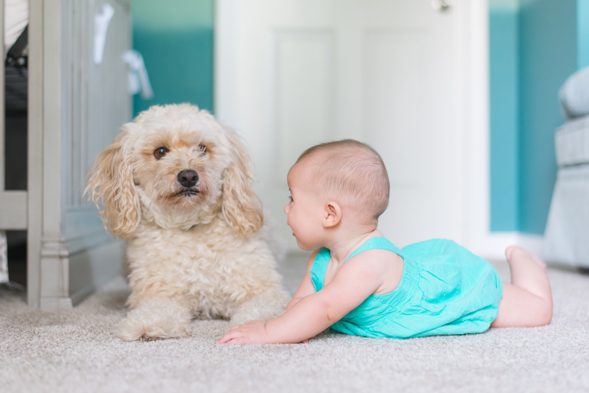

Los primeros pasos que debes tomar cuando recibas a tu mascota
Escrito por: Luciana Proaño
Fecha: 2/1/2024
El primer paso para recibir a la mascota es tener un espacio listo para ésta. Comprar ciertos objetos, organizarlos y prepararlos es necesario para crear un ambiente de respeto mutuo entre tu amigo peludo y tú. Si quieres todos los tips para realizar esto, visita nuestra página de consejos sobre preparar el hogar.

Foto de Madalyn Cox en Unsplash.
Antes de llevar a tu mascota a la casa, es importante que visites a un profesional para que evalúe el estado de salud de tu amigo. El veterinario, además de realizar un chequeo, te dará recomendaciones en base al tipo de animal que hayas adoptado. También es un buen momento para que discutan el plan de vacunas, si es que a tu mascota le falta alguna, y un plan de esterilización o castración, y no dudes de contactarte con el veterinario si observas algún problema en tu mascota.
Tener un tipo de identificación para tu mascota es de suma importancia por si se llegan a perder en algún momento. Consulta al veterinario si es que es posible la implantación de un microchip de detección. Este aparato, permitirá tener detalles del dueño y será una manera más confiable de localizarlo. Si es que no consigues el mecanismo, puedes optar por las placas de identificación con el contacto del dueño.
El paso más importante apenas tu mascota llegue a tu hogar es la correcta socialización, tanto con los otros habitantes del hogar como con otros animales que puedan estar presentes. Normalmente, los perros y gatos suelen ser muy territoriales, y para evitar peleas, lo mejor es encerrar a tu nuevo amigo en una habitación durante al menos un día. Después, sácalo progresivamente y crea interacciones pequeñas entre tus anteriores mascotas con la nueva. Poco a poco, tus amigos se acostumbrarán al nuevo integrante.
Foto de Picsea en Unsplash
Si tienes niños en casa, edúcales para que no estresen a la mascota ya que es muy probable que ésta ya se encuentre alterada por su nuevo ambiente. Introduce a los demás habitantes poco a poco, y sin presionar a tu amigo. Si decide esconderse, no le obligues a salir o a interactuar, y dale su tiempo para que se acostumbre a todo. Después de unos días, invita a personas a la casa o saca a tu amigo a un parque, para que aprenda a relacionarse con sujetos fuera de su círculo cercano de manera respetuosa.
El entrenamiento de tu mascota es importante para una convivencia saludable. Primero, enséñale a usar sus juguetes y espacios recreativos en vez de destrozar cualquier otro elemento de tu casa. Muéstrale el lugar de las cosas, y guía su uso mediante mímica. Después, puedes proceder a enseñarle trucos pequeños como a sentarse o acostarse. Mantén una postura firme ante comportamientos inadecuados, pero evita castigos severos, optando por el condicionamiento positivo: premiar cuando realiza bien una acción.
Crea un horario para tu mascota que se ajuste a tus actividades necesarias. No te olvides de colocar los siguientes puntos:
Cuidar de una mascota es una gran responsabilidad. Al principio puede parecer complicado ayudar a tu mascota a que se adapte a tu hogar, pero recuerda, con amor y buena guía podrán crear fuertes lazos de amor y comprensión mutua. ¡Suerte!
Canuto (20 de agosto del 2020). Consejos para que un perro adoptado se adapte a tu hogar. Recuperado el 2/1/2023 de: https://www.canuto.com.mx/blogs/tips-para-tu-perro/consejos-perro-adoptado-se-adapte
Gabrica. (s.f.) CÓMO PREPARARTE PARA LA LLEGADA DE UNA NUEVA MASCOTA. Recuperado el 2/1/2023 de: https://www.gabrica.cl/como-prepararse-para-tener-una-nueva-mascota/#:~:text=Debes%20adecuar%20un%20espacio%20especial,la%20altura%20y%20tama%C3%B1o%20adecuado.
Agradecimiento a las Doctoras Alegría Albán, Victoria Guapas, Carolina Joba de la clínica Care for Pets por su aporte para la creación de este blog.